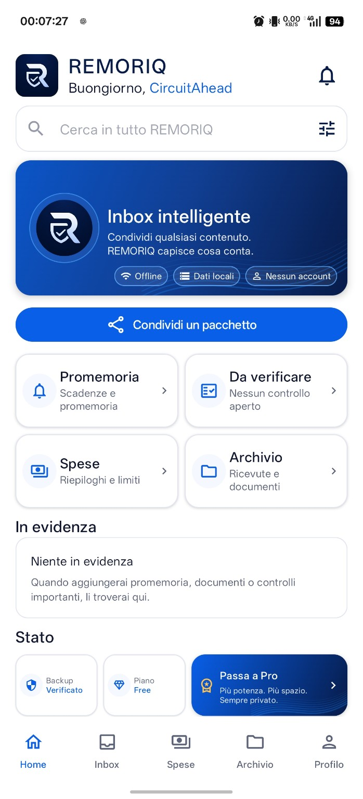

Smart Inbox
Import text, images, PDFs, files, scans and QR codes. REMORIQ helps identify what matters before you decide where it belongs.
Receipts, documents, useful text and reminders: collect them, review what matters and find them again. REMORIQ is a private memory designed around your everyday life.
In development for Android.
Interested in the launch? Get in touch →
ONE EVERYDAY EXAMPLE
A receipt is a simple place to start. Follow the three steps to see the idea behind REMORIQ.
GUIDED EXAMPLE · INVENTED DATA
01 / COLLECT
Scan a document or import a photo. The Inbox is the place to begin reviewing the content.
EXAMPLE STATIONERY SHOP
12 June 2026 · Sample document
02 / REVIEW
Check the proposed information against the original document and correct it before confirming.
Checking the original matters: recognition can make mistakes.
03 / KEEP
Confirmed receipt information helps organize your expenses. Keep the document in the archive to refer back to it.
Example Stationery Shop · €24.90
The same principle applies to other useful content: collect it, review it and choose how to keep it.
ONE APP, ONE MEMORY
REMORIQ brings different kinds of useful information into one coherent, private experience.
Import text, images, PDFs, files, scans and QR codes. REMORIQ helps identify what matters before you decide where it belongs.
Turn receipts into structured expense data and keep monthly views, budgets and categories easier to understand.
Keep documents, receipts, warranties and portable data packages organized so you can find them again.
Keep dates, deadlines and reminders from disappearing inside old messages and files.
App protection and privacy controls are designed to reduce unnecessary exposure of personal information.
Export, import, backup and restore are treated as user-ownership features, not as a lock-in mechanism.
REAL APP PREVIEW
Six real screens. Explore how REMORIQ brings your useful information together.
Inbox, reminders, expenses and archive, with highlighted items and backup status in one place.
Actual development build · Screens are in Italian

The screenshots show a current development build and may evolve before release.
PRIVATE BY DESIGN
REMORIQ is designed as a local-first application without a mandatory REMORIQ account or proprietary cloud for core use.
BEFORE YOU START
The essentials about availability, offline use and your data.
More answers in Support →REMORIQ is in development for Android. Release availability and any testing opportunities will be communicated on this site. You can contact CircuitAhead for information.
Core use is designed without a mandatory REMORIQ account. Any Google account used by Android or Google Play is separate.
Core workflows are designed to work offline. Operations involving Google Play, external providers or optional component downloads may need an Internet connection.
Content is primarily stored on your device. Use the app’s backup and export tools to keep a separate copy. CircuitAhead does not automatically hold a remote copy of your personal content.
Free and Pro are part of the project. The final feature split, prices and purchase conditions will be presented for the released version. Development screens are not a final price or feature list.
FOLLOW THE PROJECT
REMORIQ is in development for Android. Get in touch about availability or tell us you would be interested in trying it when testing opportunities are announced.
DIRECT CONTACT
contact@circuitahead.comThe link opens your email app. You choose when to send the message.